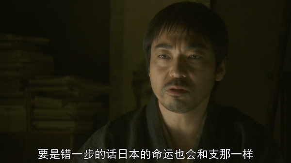
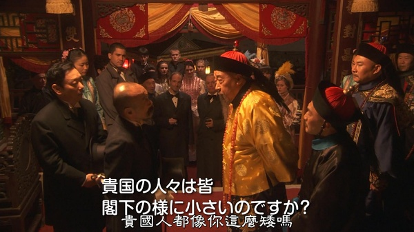
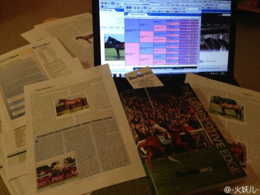
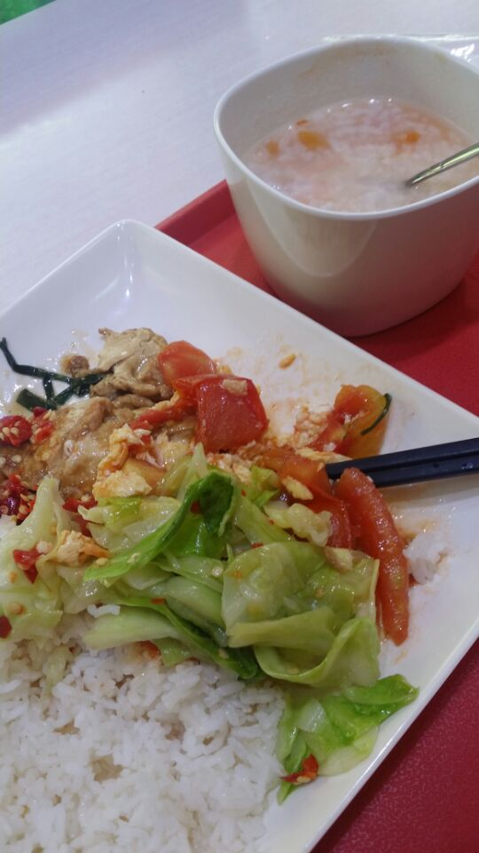

Conversation with 81184027 at Thu 14 Aug 2014 09:17:21 AM CST on 154115835 (webqq)
(08/14/2014 12:50:55 AM) 田慧慧-金华: 某个女星现在好像七十多了，秦怡。气质特别好老了也好看。她对记者说这辈子最大的遗憾就死没有得到真正的爱情。她离婚过好几次。事实上到了一定年龄和阶段要考虑的事情很多，主要是为了责任而活不是为自己。即使不被人珍惜怡然要骄傲，要珍重。
(08/14/2014 12:49:20 AM) 苹果: (#196553)一切为了孩子
(08/14/2014 07:28:44 AM) 小绵羊: 几百上千一件衣服!我觉得很惭愧，我觉得不够资格与你聊天!只能向上高高的奢望你，可望不可及，我们农民(工)啊!可怜，国家不爱我们，人民的党不爱人民，人民政府不为人民服务，悲惨的社会现象，社会格局，制度!
(08/14/2014 08:00:56 AM) 醒悟: 恩宠那里人，老公那里人
(08/14/2014 08:06:04 AM) 紫罗兰: 早上好
(08/14/2014 08:16:27 AM) 苹果: 早
(08/14/2014 08:16:48 AM) 潮哥: 早安，未来民主中国
(08/14/2014 08:27:29 AM) 紫罗兰: :)
(08/14/2014 08:38:54 AM) 蛋包飯: ;-)
(09:02:47 AM) Loki : 8月14日,2014年第227天
天天主恩惠,福满溢灵程!
愿我们收获活水吗哪，向神发出感谢赞美
旧约 尼 3：15-5：13
诗 32：
箴 21：5-7
新约 林前 7：25-40
(09:02:58 AM) 4247188974:
(09:15:33 AM) 福建-福州&水浒: 阿门，感谢主
(09:18:48 AM) 小绵羊: 老婆还是别人家的好!想不到，女人也有同感(认为老公是别人的老公能干!)!乱淫型的社会呀，可怕的爱丝!
(08/14/2014 12:50:55 AM) 田慧慧-金华: 某个女星现在好像七十多了，秦怡。气质特别好老了也好看。她对记者说这辈子最大的遗憾就死没有得到真正的爱情。她离婚过好几次。事实上到了一定年龄和阶段要考虑的事情很多，主要是为了责任而活不是为自己。即使不被人珍惜怡然要骄傲，要珍重。
(08/14/2014 12:49:20 AM) 苹果: (#196553)一切为了孩子
(08/14/2014 07:28:44 AM) 小绵羊: 几百上千一件衣服!我觉得很惭愧，我觉得不够资格与你聊天!只能向上高高的奢望你，可望不可及，我们农民(工)啊!可怜，国家不爱我们，人民的党不爱人民，人民政府不为人民服务，悲惨的社会现象，社会格局，制度!
(08/14/2014 08:00:56 AM) 醒悟: 恩宠那里人，老公那里人
(08/14/2014 08:06:04 AM) 紫罗兰: 早上好
(08/14/2014 08:16:27 AM) 苹果: 早
(08/14/2014 08:16:48 AM) 潮哥: 早安，未来民主中国
(08/14/2014 08:27:29 AM) 紫罗兰: :)
(08/14/2014 08:38:54 AM) 蛋包飯: ;-)
(09:02:47 AM) Loki : 8月14日,2014年第227天
天天主恩惠,福满溢灵程!
愿我们收获活水吗哪，向神发出感谢赞美
旧约 尼 3：15-5：13
诗 32：
箴 21：5-7
新约 林前 7：25-40
(09:02:58 AM) 此去经年:
(09:15:33 AM) 福建-福州&水浒: 阿门，感谢主
(09:18:48 AM) 小绵羊: 老婆还是别人家的好!想不到，女人也有同感(认为老公是别人的老公能干!)!乱淫型的社会呀，可怕的爱丝!
(09:21:43 AM) 蛋包飯: :L
(09:22:26 AM) Loki : 爱人如己
(09:22:56 AM) 紫罗兰: :D
(09:23:08 AM) 紫罗兰: 爽歪歪
(09:23:52 AM) 福建-福州&水浒: [偷笑]
(09:26:10 AM) 蛋包飯: 今天无意中翻开书本，发现书本里面夹着一张2012年8月1日“工作安排”
(09:26:26 AM) 福建-福州&水浒: [呲牙]
(09:26:40 AM) Loki : 拍照分享给大家看看
(09:26:44 AM) Loki : 你的历程
(09:26:48 AM) Loki :
(09:27:05 AM) 蛋包飯: 这工作安排还是双面打印的
(09:27:12 AM) 蛋包飯: 只有教徒才可以得到
(09:27:30 AM) 蛋包飯: 自从被开除以后，再也得不到“工作安排”了
(09:30:56 AM) 紫罗兰: 你上次还说会发到你手机
(09:31:26 AM) Loki : 被揭穿了。
(09:33:10 AM) 蛋包飯: 加入全能神也有好处，可以申请宗教避难
(09:34:35 AM) 福建-福州&水浒: [发呆]
(09:38:27 AM) 紫罗兰: 为什么要避难
(09:38:35 AM) 紫罗兰: 避难有钱得？
(09:38:43 AM) 蛋包飯: 
(09:40:07 AM) 蛋包飯: 这统计数据真假。就业率91%
(09:40:36 AM) 此去经年:
(09:40:59 AM) 蛋包飯: 高校毕业生，毕业时都需要签订劳动合同，有很多都是假的签字盖章，没有实行真正的就业
(09:41:36 AM) 此去经年: 我看过一则统计报道，高职类的比地方性普通本科就业率高很多
(09:41:56 AM) 蛋包飯: 我当初毕业的时候就是找我妈的单位盖的章。若没和用人单位签约，学校不让论文答辩，大学的领导们还是人吗？这么凑数据、这么欺骗学生，难道就是现在的大学精神吗？
(09:42:51 AM) 蛋包飯: 就业率低了上头领导就不高兴，就不和谐，可你孬好也是个有文化的人啊，难道就不能有点人味，说点人话？唉，对当今的大学教育真真失望透顶啊。
(09:39:57 AM) 光: 学校在教学生适应社会
(09:40:01 AM) 光: 而不是改良社会
(09:43:35 AM) 蛋包飯: 看看这些就业率都是怎么来的吧，大学毕业前就必须要学生拿到一个单位开来的工作单位证明才给学生发大学毕业证书，是多么荒唐的事情
(09:40:56 AM) 光: 确实能弄虚作假的人在目前社会更吃得开
(09:44:15 AM) 蛋包飯: 中国大学本来就是在培养失业大军为什么还不能承认
(09:41:44 AM) 光: 如果没有一个基于公德的标尺，人是无底线的动物
(09:45:11 AM) 福建-福州&水浒: [图片]【笑段子：中国特色创收方式】
1、老汉：碰瓷。2、市长：卖地。3、统计：掺水。4、校长：扩招。5、交警：罚款。6、专家：扯淡。7、房管：拆迁。8、明星：卖色。9、老板：克扣。10、医生：红包。11、公路：维修。12、中介：设套。13、计生：罚款。14、城建：转包。15、农民：并村。16、工人：挖窑。 -----网摘
(09:45:42 AM) 福建-福州&水浒: 造假造假
(09:42:56 AM) 光: 造假是捷径啊
(09:43:03 AM) 光: 中国人喜欢捷径
(09:43:14 AM) 光: 做事多辛苦
(09:46:43 AM) 蛋包飯: 看到这些统计数据，真假。全民造假。
(09:43:56 AM) 光: 造假之后忽悠一群人，让别人做事就行了
(09:44:32 AM) 光: 这就是造假者心里的算盘
(09:47:33 AM) 蛋包飯: 就算是美国大学，就业率也难达到91.8%
(09:45:02 AM) 光: 南郭先生
(09:45:11 AM) 光: 浑水摸鱼
(09:45:18 AM) 光: 中国有这个传统的
(09:48:28 AM) 此去经年: 这些数据对于个体本身意义不大，造假就让他造呗
(09:45:58 AM) 光: 造谣之后更大的问题是传谣和信谣
(09:46:14 AM) 光: 背后还有一个劣币驱逐良币的效应
(09:46:29 AM) 光: 如果人人都造假，谁还会去真的做事
(09:47:30 AM) 光: 如果iphone和山寨手机卖一个价格，那么iphone应该高兴还是应该伤心
(09:50:41 AM) 蛋包飯: 这些数据可以上新闻联播的，我国大学重点本科就业率高达91.8%.大学专科就业率91.4%.高职院校就业率90.9%.
(09:48:20 AM) 光: 造假的社会创新这个就没人做了
(09:48:40 AM) 光: 你创新，别人就在你的基础上造假
(09:51:42 AM) 蛋包飯: 从统计数据上看，由于我国经济回暖，就业率超过发达国家，大学教育水平超越美国。
(09:49:07 AM) 光: 社会公益也没人做了
(09:52:09 AM) 潮哥: 毛线
(09:49:19 AM) 光: 变成社会作秀
(09:49:25 AM) 光: 前者要付出的
(09:49:28 AM) 光: 来真的
(09:49:33 AM) 光: 后者只要走走形式就行了
(09:49:49 AM) 光: 求名求利
(09:50:00 AM) 光: 更有甚者
(09:50:08 AM) 光: 假中还包藏祸心
(09:50:16 AM) 光: 很多你看不到看不清的猫腻
(09:53:27 AM) 蛋包飯: 我国大学就业率远远超越了美国，日本，英国，法国等国。统计数据表明，大学毕业生首选国有企业，其次事业单位，再次国家机关省直机关公务员。
(09:50:44 AM) 光: 这样社会，幸福感从何而来
(09:51:04 AM) 光: 假 恶 丑 必然是一体
(09:51:49 AM) 光: 如果有一天你遇到指鹿为马的案例
(09:52:10 AM) 光: 那么这个社会的道德感降低到什么程度是非常让人震惊的
(09:52:46 AM) 光: 存在指鹿为马的案例
(09:53:00 AM) 光: 就说明社会人对道德的标准已经是很模糊了
(09:53:14 AM) 光: 是非泯灭的地步
(10:00:12 AM) 此去经年: 己烯雌酚又称女性素、人造求偶素等，属于雌激素类物质。与天然雌二醇具有相同药理与治疗作用。可用于治疗妇科疾病、促进动物生长，但不恰当的使用，会产生副作用，可能引起人体内遗传物质的改变，发生基因突变而诱发癌症；少儿食用残留己烯雌酚的食物，会导致性早熟；男性长期摄入，可产生男性女性化等一系列副作用。
(10:00:12 AM) 光: 当南郭先生，滥竽充数的人逐渐成为社会的主流人士
(10:00:24 AM) 光: 社会会糜烂到什么程度
(10:00:41 AM) 光: 你真的指望南郭先生们为社会做什么有价值的贡献么
(10:00:50 AM) lost message from #196641 to #196641
(10:03:51 AM) 蛋包飯: 一个教师去世后，和上帝喝茶。上帝问：“教师职业，很轻松，你还没有到退休年龄，怎么就死了？”教师好像遇到了知音，激动地说：“我亲爱的上帝，你知道教师有N种死法吗？“说来听听“ 绩效工资骗死你；别人奖金吓死你;两基验收累死你；各种捐款捐死你;职称评定等死你；政治任务压死你;调皮学生气死你；野蛮家长打死你； 房子车子想死你；造假资料抄死你；竞聘上岗玩死你；检查教案赶死你； 教育改革累死你；假期培训忙死你；不涨工资穷死你；调动工作卡死你;光辉职业哄死你；一生操劳病死你。上帝认为他太能说了，改变不了职业习惯，每天会这样絮絮叨叨的，会打扰天堂的幽静，于是就把他打入了地狱。
(10:04:50 AM) 蛋包飯: 教师一年一考，公务员一年不考，教师提前上班，公务员迟到常事，教师上班写教案，公务员上班看报纸，教师打开电脑做课件，公务员打开电脑玩游戏，教师没完没了批作业，公务员给钱就签字，教师每天晚下班，公务员提前2小时找不到人，教师背的是大兜里面装的是作业，公务员夹的是小包里面都是钱，教师下班去菜店，公务员下班去饭店:D
(10:02:53 AM) 光: 南郭小学，南郭中学，南郭大学，南郭奶制品公司，南郭十字会，南郭公务员，南郭酒厂，南郭烟厂
(10:03:00 AM) 光: 南郭饭店
(10:03:03 AM) 光: 等
(10:03:05 AM) 光: 南郭社会
(10:03:14 AM) 光: 那会是一个什么样的社会
(10:03:19 AM) 光: 不就是现在的样子么
(10:06:36 AM) 此去经年: 南郭国
(10:03:40 AM) 光: 嗯
(10:06:14 AM) 光: 这样的社会，你花钱买不来放心
(10:06:33 AM) 光: 因为你不小心就碰到假的了
(10:06:56 AM) 光: 行行业业都有假
(10:11:49 AM) 蛋包飯: 嗯。各行各业都造假！
(10:09:04 AM) 光: 他们都是南郭先生的后人啊
(10:10:02 AM) 光: 日本为何崛起
(10:10:04 AM) 光: 认真
(10:10:19 AM) 光: 天朝如何没落，腐朽
(10:10:23 AM) 光: 造假
(10:10:33 AM) 光: 态度不一样，结果能一样么
(10:13:52 AM) 蛋包飯: 妈的，看看教育行业这么黑，我不想考教师证了:|
(10:11:13 AM) 光: 提起甲午战争一个个的都是爱国志士
(10:14:18 AM) 蛋包飯: 调皮学生气死你；野蛮家长打死你； 房子车子想死你；造假资料抄死你；竞聘上岗玩死你；检查教案赶死你； 教育改革累死你；:|
(10:11:24 AM) 光: 遇到社会现实
(10:11:30 AM) 光: 就一个个壁上观
(10:12:04 AM) 光: 甲午之败 就是源于造假的风气
(10:12:22 AM) 光: 不反思这个根本问题
(10:15:26 AM) 蛋包飯: 腐朽，造假，都是甲午海战失败的原因。
(10:12:27 AM) 光: 都是假的爱国者
(10:12:31 AM) 光: 嗯
(10:12:40 AM) 光: 爱国者中的南郭
(10:13:29 AM) 光: 造假这么多，有人居然还好意思说天朝崛起
(10:15:12 AM) 光: 遇到事情你指望这些南郭去面对么
(10:15:19 AM) 光: 他们跑的比兔子都快
(10:16:45 AM) 光: 满清几万铁骑愣是打败了偌大的明朝，原因何在，内部已经腐朽不堪了
(10:17:35 AM) 光: 南郭之流遇到他们跑的比兔子都快
(10:21:07 AM) 蛋包飯: 光先生，你认为男人从事教师行业是不是很没前途，我一个教师同学告诉我，作为一名教育者，对中国的教育已经毫无希望可谈。
(10:18:23 AM) 光: 不要做体制内的教育
(10:18:33 AM) 光: 体制内的教育就有体制病
(10:21:43 AM) Loki : 有些教育人士心理有问题。、
(10:21:46 AM) Loki : 心理变态。
(10:22:07 AM) 蛋包飯: 就是体制内的教育。我有两个同学都是中学语文教师，这是肺腑之言。对中国的教育已经毫无希望可谈。
(10:19:12 AM) 光: 嗯
(10:19:34 AM) 光: 你进去了还会想出来
(10:19:39 AM) 光: 所以还是不要进去了
(10:23:36 AM) 蛋包飯: 老师这样警告学生：“孩子们，长大一定要有能耐，即使没有能耐，也不要当老师。”
(10:24:05 AM) 此去经年: 我以前的高中老师愤青来的
(10:24:19 AM) 此去经年: 老是骂党
(10:25:01 AM) 此去经年: 误人子弟
(10:25:09 AM) Loki : 骂党可不是交愤青
(10:25:33 AM) 此去经年: 那算什么
(10:29:43 AM) 蛋包飯: 以前初中有个数学老师，莆田人，普通话说的一塌糊涂，也能做老师。
(10:30:03 AM) Loki :
(10:30:08 AM) 福建-福州&水浒: [图片]【城管，你还玩吗？】昆明城管协管员遭2人追砍致死 官方称事发时已下班！按:城管员看到没？这就是你们悲惨的结局！被砍死到也就算了，可你的主子却说“下班了！”，既然下班了，那你别说被砍死，就是你被灭门了，都与我们单位和国家没有半毛钱关系！小山驴逼你感觉咋样啊？[em]e120[/em][em]e151[/em]
http://i.ifeng.com/news/news?vt=5&ch=rss_htc&aid=87741838
(10:30:16 AM) 福建-福州&水浒: :'(
(10:33:00 AM) 苹果: :-(:-(
(10:33:55 AM) 蛋包飯: :D城管这职位有编制的，不好进呢
(10:34:28 AM) 蛋包飯: 我一个同事想通过公务员考试进入城管编制，结果笔试第一名，面试被刷下。
(10:36:13 AM) 蛋包飯: 面试被刷无奈之下，又以笔试第一的成绩考上了区政府审计局，也是有编制的。
(10:36:57 AM) 蛋包飯: 国人疯抢编制啊。编制内干活轻松。
(10:34:04 AM) 光: 明清易代時所爆發的入關戰爭，滿清以12万的兵力入關[4]，襲捲整個华北和华南。清人趙烈文曾表示：“国初创业太易，诛戮太重，所以有天下者太巧。天道难知，善恶不相掩，后君之德泽，未足恃也。”。
(10:34:28 AM) 光: 12万人干掉明朝
(10:37:39 AM) 福建-福州&水浒: :O
(10:34:57 AM) 光: 4万多满洲八旗、近两万蒙古八旗、约3万汉军八旗以及孔有德等统率的约两万天祜兵、天助兵，加上包衣、外藩蒙古兵、朝鲜军合计12万.
(10:35:11 AM) 光: 真正的满八旗才4万多
(10:38:35 AM) Loki : 我们汉人。。。
(10:38:50 AM) Loki : 起码现在也掌权了，不过貌似还不如以前。
(10:36:05 AM) 光: 嗯
(10:36:16 AM) 光: 毛病不改，历史会重演的
(10:39:34 AM) 福建-福州&水浒: 嗯
(10:36:36 AM) 光: 嗯
(10:39:52 AM) 福建-福州&水浒: 腐败才会挨打
(10:40:03 AM) 福建-福州&水浒: 而不是落后挨打
(10:37:06 AM) 光: 嗯
(10:40:13 AM) 蛋包飯: 历史是一面镜子，总是周期性反复上演。
(10:40:34 AM) 醒悟: :D狗改不了吃屎!
(10:41:58 AM) 醒悟: 倒一次霉醒一次，过后好了伤疤忘了痛还那样
(10:42:21 AM) 蛋包飯: 王朝末，百教兴。历史周期律
(10:42:49 AM) Loki : 清朝人杀我们汉人比日本人杀我们汉人更多，更狠，更绝。
(10:43:08 AM) Loki : 而我们现在的教育只是引导我们仇恨日本人
(10:43:21 AM) Loki : 对满人居然持有一家人的态度。
(10:43:29 AM) 醒悟: 老师，警察在这边好工作啊
(10:43:53 AM) 此去经年: 狱警好待遇
(10:44:20 AM) 醒悟: 把日本打下来也是一家人:D
(10:44:24 AM) 蛋包飯: 老师--事业单位，警察--行政执法部门
(10:45:01 AM) 此去经年: 民族矛盾解决不了的，留给我们的炎黄子孙自己解决吧，哈哈哈
(10:45:01 AM) 醒悟: 老师各各开私家车上班
(10:45:54 AM) 蛋包飯: 日本是打不下来的。大和民族不会屈服于汉族统治，宁死不屈，大和自古以来有剖腹传统。
(10:46:49 AM) 醒悟: 屌毛还不一样是美国人的狗
(10:47:03 AM) Loki : - -
(10:47:51 AM) 醒悟: 把男的全杀啦!日本女人贱全奸了生下来就是大和民族
(10:48:32 AM) Loki : 醒悟好极端
(10:48:44 AM) Loki : 日本人不得不佩服他们的民族意识
(10:49:14 AM) Loki : 如果中国大陆能有日本人百分之一的民族意识，那么中国就可以压倒美国。
(10:48:39 AM) 光: 嗯
(10:49:09 AM) 光: 我们离日本明治维新的时代的国民意识还有距离
(10:49:33 AM) 光: 看看坂上之云
(10:50:24 AM) 光: 今天依然能感觉到这种国民意识上的差距
(10:51:30 AM) 光: 明治维新1866年-1868年开始，清朝洋务运动是1861年开始的，还早5年
结果日本上下一心，从一个比清朝还穷的农业国开始
大兴教育，给民教化，民主。与旧制度决裂
30年打败了清朝
40年打败了俄罗斯
50年成为了一战战胜国
70年就自己造出了航母飞机的联合舰队
关键是积累了现代文明的底蕴，以至于二战废墟中都能够迅速崛起
(10:54:46 AM) 蛋包飯: 锦涛书记退了，他的八荣八耻也没有人学习了！中国是大政府小社会。日本是小政府大社会。
(10:53:05 AM) 光: http://movie.douban.com/subject/2049761/
(10:54:32 AM) 光: 这样的民族，你精神上称他们为“小日本”有意义么，这不是现代版的阿Q么
(10:57:57 AM) 福建-福州&水浒: :D:D
(10:55:03 AM) 光: :face14:
(10:59:25 AM) Loki : 拿事实来讲话。
(10:59:28 AM) 蛋包飯: :D坂の上の雲:D日清戦争:D日露開戦:D
(10:59:42 AM) Loki : 中国啊Q太多了。
(10:59:48 AM) Loki : 南郭先生也太多了。
(10:56:54 AM) 光: 不是好事
(11:00:21 AM) 蛋包飯: 
(11:00:24 AM) 醒悟: 日本战败后送出大批女的出国卖淫起家的
(10:57:52 AM) 光: 包括打败大清的甲午用的战舰
(10:57:57 AM) 光: 也有卖淫的钱
(11:01:06 AM) 醒悟: 日本就是厚黑学
(11:01:08 AM) 蛋包飯: 
(10:58:16 AM) 光: 连天皇都捐钱
(10:58:31 AM) 光: 我们是慈禧要盖园子
(11:01:38 AM) 醒悟: 是国家让出去卖为国卖淫
(10:58:42 AM) 光: 用军费里面抽
(10:59:07 AM) 光: 这背后还是态度啊
(11:00:20 AM) 光: 一方是外强中干
(11:00:25 AM) 光: 一方是虎视眈眈
(11:00:33 AM) 光: 胜负其实已经分了
(11:04:12 AM) 福建-福州&水浒: 嗯嗯
(11:01:18 AM) 光: 一面是抽大烟的自我麻痹的民族
(11:04:29 AM) 福建-福州&水浒: 全民皆兵
(11:01:39 AM) 光: 背后是一群呼万岁的人
(11:01:50 AM) 光: 一面是独立民主的国民
(11:05:19 AM) Loki : 差距。
(11:02:22 AM) 光: 你觉得哪种更有希望
(11:05:25 AM) 蛋包飯: 战败后，卖淫很正常。日本重视教育，废除农历，脱亚入欧，全面学习西方。于是从废墟中低调崛起。
(11:02:26 AM) 光: 嗯
(11:05:28 AM) Loki : 所以精明感觉就是愚蠢。
(11:05:41 AM) Loki : 不过我还是不喜欢直那这个词。
(11:06:16 AM) Loki : 落后、未开放、奴隶、充满侮辱性啊
(11:03:23 AM) 光: 嗯
(11:06:36 AM) Loki : 印度直那
(11:06:52 AM) Loki : 这个称号居然落到中国人头上- -搞。
(11:04:16 AM) 光: 国家大而不强
(11:04:22 AM) 光: 没有什么意义的
(11:07:31 AM) 蛋包飯: Loki台湾人怎么不去发达国家深造，来复旦学习新闻，以后不要进入新闻界造假弄假新闻
(11:07:36 AM) 苹果: 以前还东亚病夫
(11:04:42 AM) 光: 国家人多而没有独立意识，也没有什么意义的
(11:08:38 AM) Loki : @蛋包飯 没钱。。
(11:09:30 AM) 蛋包飯: 呵呵，复旦大学给你减免学费吧
(11:09:39 AM) 醒悟: 台湾总比上海富吧
(11:09:54 AM) 蛋包飯: 公费念书是不要多少钱。只要支付生活费
(11:10:19 AM) 苹果: 台湾亚州四小龙
(11:10:21 AM) Loki : 在海外的公立大学读书还不如在大陆混个好点的学历。
(11:10:24 AM) 醒悟: 跑回来干啥
(11:12:08 AM) 蛋包飯: 海外是私立的比公立大学的强
(11:12:23 AM) Loki : 算是交换生，所以名校对我要求很低，拿文凭容易学费低。
(11:13:00 AM) Loki : 我们这届交换生很多的。
(11:13:13 AM) 蛋包飯: 你念新闻学，这个专业外热内冷
(11:13:26 AM) 蛋包飯: 媒体圈有个现象，虽然做新闻，但却不喜欢招收新闻专业的学生，特别是没有经验的毕业生。
(11:14:00 AM) Loki : 以后承包做会展这块。
(11:14:15 AM) Loki : 学新闻的并不是全是记者。
(11:14:16 AM) 蛋包飯: 新闻学就是个“万金油”，随着职场要求越来越专业化，新闻学反倒不适应这种态势，加上媒体是一个可学习的行业，没有太多的技术门槛，没有特定的专业要求，入手快、门槛低。
(11:16:00 AM) Loki : 入手快？》
(11:16:20 AM) Loki : 新闻法、国际新闻法
(11:16:27 AM) 蛋包飯: 直接进入专业对口的媒体单位就是你的未来。但是，也可以从事其他行业。
(11:16:30 AM) Loki : 新闻发布会需要做哪些
(11:16:34 AM) Loki : 这些入手快？
(11:16:35 AM) Loki : - -
(11:16:53 AM) Loki : 现在是走国际路线。
(11:16:59 AM) 蛋包飯: 我也是“万金油”，从事了其他行业。
(11:17:07 AM) Loki : 金融？
(11:14:48 AM) lost message from #196809 to #196809
(11:17:49 AM) 蛋包飯: 金融去向非常多元
(11:17:49 AM) Loki : (#196809)
(11:18:13 AM) Loki : 上次有个英国的马场来我们学校做外招
(11:18:32 AM) Loki : 我也入选了，只是没去，做种马护理，在英国
(11:18:59 AM) 蛋包飯: 英国不错，英镑比美元还大。
(11:19:01 AM) 蛋包飯: 很多在银行工作的同学，月薪大概是五六千，为了照顾他们的感受，我只好说我的月薪是八千。
(11:19:39 AM) 醒悟: :D
(11:19:46 AM) Loki : 我有几个比较好的同学入选去了，现在留在英国的貌似都发了几笔小财，这家不出名的马场，他的后台老板就是英国某皇室成员，福利好的让人羡慕- -
(11:20:52 AM) 蛋包飯: 擦，马场就是赌场，很好的。
(11:20:56 AM) Loki : 某个女同学经常在微博里晒在欧洲各种地方游玩的生活照，还有中东迪拜，是一个马展会，迪拜皇室成员亲自接待了他们-0-
(11:21:11 AM) Loki : 不是，是养纯种一些的好马的。
(11:21:36 AM) Loki : 专门提供一些喜欢种马和马术的人员，市场普遍都是皇室成员和顶级富豪- -
(11:22:07 AM) 蛋包飯: 这就对了。马场养马也不错:|。老牌资本主义国家不会比大陆差。
(11:22:27 AM) Loki : 额，我现在没照片，待会给你们发一个一批爱尔兰宝马的拍卖价格。成交价是700万英镑左右- -
(11:24:27 AM) 苹果: :|这马寸肉寸金啊
(11:24:45 AM) 蛋包飯: 呵呵，好贵的马。去养马有前途
(11:25:09 AM) Loki :
(11:25:34 AM) 蛋包飯: 种马护理要兽医才对:|你也可去的。
(11:25:42 AM) Loki : 
(11:25:49 AM) Loki : 额，他们是有专业培训的。
(11:26:18 AM) 蛋包飯: 相当好！老牌资本主义，曾经的日不落帝国
(11:26:36 AM) Loki :
(11:26:38 AM) 蛋包飯: 英国一直未加入欧元区。英镑很大的。
(11:27:57 AM) Loki :
(11:28:06 AM) Loki : 貌似就是这皮马
(11:28:11 AM) Loki : 被拍卖的。
(11:28:40 AM) 紫罗兰: 要马来干嘛
(11:29:07 AM) 蛋包飯: 700万英镑这马的身价比我贵:|
(11:31:50 AM) 紫罗兰: @立波 你值多少钱？
(11:31:53 AM) 紫罗兰: :D:D:D
(11:42:40 AM) Loki : 7600万人民币左右吧- -
(11:44:08 AM) Loki : 现在想想，要不是当时觉得英国太远，在那边生活我怕自己适应不了，实习期工资开的也低所以没去，如果去了也蛮不错的。
(11:45:01 AM) Loki : 在草场上放放马，搭理东西，记录马匹成长新闻稿-0-
(11:45:04 AM) Loki : [喝水]�
(11:45:28 AM) 蛋包飯: 那么好的生活居然放弃
(11:47:20 AM) Loki : 英国人表里不一，英式餐饮我不喜欢。
(11:47:43 AM) Loki : 这些成员都是马术爱好者。。。
(11:47:47 AM) Loki : - -中东人才是真的土豪。
(11:48:02 AM) 福建-福州&水浒: :B:B
(11:48:09 AM) 福建-福州&水浒: 石油大亨
(11:51:07 AM) 蛋包飯: 石油就是黑金。有钱啊
(11:51:57 AM) Loki : 是啊，人家给个小费的钱都够在上海买套房子了-0-
(11:53:30 AM) 蛋包飯: 据说上海的穷人住在地下室里面，贫富差距巨大
(12:41:50 PM) 福建-福州&水浒: :D:D:D
(12:47:49 PM) 紫罗兰: 吃粥
(12:48:04 PM) 潮哥: 吃饭
(12:48:33 PM) 潮哥: 
(12:49:00 PM) 紫罗兰: 出去外面时候自己吃东西，吃得最多的就是福建沙县小吃
(12:49:50 PM) 潮哥: 听说沙县不卫生
(12:50:13 PM) 福建-福州&水浒: :!
(12:50:49 PM) 此去经年: 在家吃好点
(12:51:05 PM) 此去经年: 还是自己种自己吃
(12:51:46 PM) 此去经年: 白沙这边也有沙县小吃
(12:52:21 PM) 此去经年: 应该是福建那边的标志
(12:52:30 PM) 紫罗兰: 都说出门在外咯
(12:52:41 PM) 此去经年:
(12:53:17 PM) 紫罗兰: 在外面吃都一样没有卫生的
(12:53:21 PM) 此去经年: 可以去别人家蹭饭的
(12:53:39 PM) 紫罗兰: 不喜欢
(12:54:22 PM) 紫罗兰: 蹭饭成本高还得笑
(12:54:23 PM) 此去经年: 可以到买菜到店里自己洗自己炒
(12:54:36 PM) 紫罗兰: 我没试过
(12:54:44 PM) 此去经年:
(12:55:07 PM) 此去经年: 要到一点多没人光顾可以试试
(12:55:35 PM) 紫罗兰: 呵呵，我才不呢
(12:55:59 PM) 紫罗兰: 再说了我也不会煮
(12:56:14 PM) 潮哥: 我教你
(12:56:30 PM) 紫罗兰: 呵呵
(12:56:34 PM) 此去经年: :handclap:
(12:57:08 PM) 紫罗兰: 你是？
(12:57:16 PM) 紫罗兰: 大厨？
(12:57:32 PM) 福建-福州&水浒: 未来你老公
(12:57:33 PM) 福建-福州&水浒: :D:D:D:D
(12:57:58 PM) 潮哥: 雷锋
(12:58:06 PM) 福建-福州&水浒: 女人不会做饭???
(12:58:21 PM) 福建-福州&水浒: 那怎么成呢
(12:58:33 PM) 潮哥: 不会做饭吃什么
(12:58:35 PM) 紫罗兰: 我不会
(12:58:47 PM) 福建-福州&水浒: 不得把孩纸饿昏了
(12:58:47 PM) 潮哥: 免费教你
(12:58:58 PM) 潮哥: 十八道家常菜
(12:59:05 PM) 紫罗兰: 我会煮粥和煮面
(12:59:10 PM) 紫罗兰: 好
(12:59:12 PM) 福建-福州&水浒: :|
(12:59:39 PM) 福建-福州&水浒: 喝粥也得配菜吧
(12:59:40 PM) 紫罗兰: :|
(12:59:46 PM) 福建-福州&水浒: 光喝粥？？
(12:59:49 PM) 紫罗兰: 萝卜干
(12:59:50 PM) 潮哥: 谁不会啊
(12:59:53 PM) 潮哥: 最简单
(01:00:11 PM) 福建-福州&水浒: 我也会做饭:D
(01:00:21 PM) 紫罗兰: 煮粥我要加好几次水
(01:00:25 PM) 福建-福州&水浒: 不会e死自己
(01:00:49 PM) 此去经年:
(01:00:50 PM) 潮哥: 聪明伶俐呀
(01:00:51 PM) 紫罗兰: 煮饭也会
(01:00:52 PM) 山东-青岛&昆吾: 煮粥为毛要加好几次水？
(01:01:04 PM) 此去经年: @x
(01:01:06 PM) 福建-福州&水浒: 原先相亲时候我就担心我那90后老婆不会做菜
(01:01:15 PM) 紫罗兰: 不加水会成了饭
(01:01:19 PM) 福建-福州&水浒: 我就直接问她你会不会做川菜
(01:01:20 PM) 福建-福州&水浒: :D:D
(01:01:28 PM) 此去经年: 稀粥要放多点水嘛
(01:01:52 PM) 福建-福州&水浒: :|:|:|
(01:01:55 PM) 紫罗兰: 觉得一点儿米不用那么多水
(01:02:05 PM) 福建-福州&水浒: 我靠
(01:02:08 PM) 小绵羊: 回锅肉!我爱吃!
(01:02:16 PM) 福建-福州&水浒: 煮面当什么
(01:02:22 PM) 山东-青岛&昆吾: 水煮肉片
(01:02:24 PM) 福建-福州&水浒: 白煮面条么
(01:02:46 PM) 此去经年: 放点葱ＯＫ:D
(01:02:49 PM) 紫罗兰: 可以加青菜鸡蛋
(01:03:15 PM) 紫罗兰: 我喜欢番茄炒蛋
(01:03:27 PM) 此去经年: 小孩长身体应该吃好点哇
(01:03:46 PM) 紫罗兰: 我不小
(01:04:12 PM) 福建-福州&水浒: 你孩子要吃啊
(01:04:20 PM) 福建-福州&水浒: 家里有养猪么
(01:04:30 PM) 此去经年: 嗯，就是
(01:04:33 PM) 福建-福州&水浒: 或者是鸡鸭鱼肉
(01:04:36 PM) 紫罗兰: 没有养猪
(01:04:45 PM) 紫罗兰: 养鸡
(01:05:03 PM) 紫罗兰: 我孩子们都吃和我一样的
(01:05:10 PM) 紫罗兰: 她奶奶煮
(01:06:01 PM) 福建-福州&水浒: 爽啊
(01:06:16 PM) 福建-福州&水浒: 女人不用煮饭
(01:07:06 PM) 紫罗兰: 我不会
(01:07:46 PM) 福建-福州&水浒: 不会学啊
(01:08:12 PM) 紫罗兰: 田里地里忙呢
(01:08:17 PM) 福建-福州&水浒: 梧州靠海边么
(01:08:25 PM) 紫罗兰: 不靠
(01:08:39 PM) 紫罗兰: 我这是很多山的地方
(01:08:48 PM) 此去经年: 靠广东吧
(01:08:58 PM) 此去经年: 罗定云浮
(01:09:18 PM) 福建-福州&水浒: 我回去偶尔也下地干农活
(01:09:22 PM) 紫罗兰: 嗯
(01:09:23 PM) 此去经年: 我记得是珠江上游
(01:09:27 PM) 紫罗兰: 我天天干
(01:09:31 PM) 福建-福州&水浒: 时刻告诫自己自己是农民
(01:09:41 PM) 紫罗兰: 德庆
(01:10:09 PM) 小绵羊: 滕县吗?
(01:10:40 PM) 福建-福州&水浒: 老乡???
(01:10:57 PM) 紫罗兰: 我事村里，梧州靠近德庆
(01:11:03 PM) 紫罗兰: 是
(01:11:24 PM) 此去经年: 梧州市东邻广东，南接玉林，西连贵港，北通贺州、桂林
(01:11:40 PM) 小绵羊: 我老家平南!很多小贪官的穷地方!
(01:12:11 PM) 福建-福州&水浒: 欧
(01:12:30 PM) 此去经年: 讲粤语的吗
(01:12:33 PM) 福建-福州&水浒: 你们都是广西壮族自治区？
(01:12:48 PM) 福建-福州&水浒: 白话
(01:12:54 PM) 福建-福州&水浒: 客家话
(01:13:09 PM) 此去经年: 我海南黎族的
(01:13:11 PM) 小绵羊: 平南有官街，即官员一条街!
(01:13:23 PM) 此去经年: 闽南话
(01:13:30 PM) 紫罗兰: @小绵羊 平南人多
(01:13:36 PM) 紫罗兰: 骗子多
(01:14:04 PM) 小绵羊: 白话，粤语，客家，闽南话!
(01:14:13 PM) 紫罗兰: @此去经年 我们讲的接近粤语，是土白话
(01:14:23 PM) 此去经年: 潮汕话与闽南话差别大不大哇？
(01:14:27 PM) 此去经年: 哦哦哦
(01:14:40 PM) 紫罗兰: @小绵羊 你是平南那里的？
(01:15:11 PM) 小绵羊: 对呀!做骗钱的人多!
(01:15:18 PM) 福建-福州&水浒: 闽南语我听不懂
(01:15:26 PM) 福建-福州&水浒: 虽然我是福建人:$
(01:15:51 PM) 紫罗兰: @小绵羊 学校里孩子偷东西的很多
(01:16:11 PM) 福建-福州&水浒: 福建九地市7种方言，有时候隔座山的人交流都困难
(01:16:12 PM) 小绵羊: 紫罗兰，我是北河的!
(01:16:34 PM) 紫罗兰: 我不喜欢平南的人，在那里呆过几年
(01:16:39 PM) 紫罗兰: 不懂
(01:16:55 PM) 小绵羊: 在哪呆!
(01:17:03 PM) 紫罗兰: 我是在县城，东龙也到过
(01:17:30 PM) 小绵羊: 东龙?
(01:17:37 PM) 紫罗兰: 嗯
(01:18:03 PM) 小绵羊: 没听过，是县城吗?
(01:18:18 PM) 紫罗兰: 是乡镇
(01:18:45 PM) 紫罗兰: 不对，那是贵港的
(01:18:48 PM) 紫罗兰: :D
(01:18:52 PM) 紫罗兰: 记错了
(01:19:07 PM) 小绵羊: 东华乡有一个，在丹竹
(01:19:11 PM) 紫罗兰: 平南我呆县城的
(01:19:30 PM) 紫罗兰: 是我记错
(01:20:03 PM) 小绵羊: 是去干吗!我是乡下农村人，思旺!
(01:20:15 PM) 紫罗兰: 教我做菜的，什么时候开始？？？:D:D:D
(01:20:57 PM) 紫罗兰: 呵呵，思旺我有亲戚
(01:21:13 PM) 潮哥: 这里老乡群？
(01:21:43 PM) 紫罗兰: 叫武翔
(01:21:49 PM) 紫罗兰: 不是
(01:22:04 PM) 小绵羊: 好呀!过年到思旺上Q通知我一声，我接你玩几天!
(01:22:59 PM) 小绵羊: 请加Q1994857509
(01:23:45 PM) 此去经年: 我那边有摸奶节的，你们听过吗
(01:24:03 PM) 潮哥: 真的吗
(01:24:03 PM) 福建-福州&水浒: :B:B:B
(01:24:03 PM) 小绵羊: ?
(01:24:11 PM) 潮哥: 去参加去
(01:24:16 PM) 福建-福州&水浒: 听过
(01:24:17 PM) 小绵羊: 怎玩?
(01:24:28 PM) 此去经年: 农历的七月中旬
(01:24:53 PM) 福建-福州&水浒: 有吃奶节???
(01:25:19 PM) 此去经年: 传言来的
(01:25:41 PM) 此去经年: 现在没人搞了，传统文化没了
(01:25:50 PM) 此去经年: 丧失殆尽
(01:28:35 PM) 蛋包飯: 摸奶节？不是吧
(01:29:30 PM) 紫罗兰: 加不了
(01:29:57 PM) 此去经年: 传统来着，爷爷奶奶那辈都有
(01:30:12 PM) 紫罗兰: 现在还有摸奶节吗？
(01:30:31 PM) 紫罗兰: 我们前天还在争论这个问题
(01:30:45 PM) 紫罗兰: 云南是吗
(01:30:48 PM) 此去经年:
(01:31:02 PM) 此去经年: 海南古村落
(01:31:09 PM) 紫罗兰: 哦
(01:31:24 PM) 紫罗兰: 安安，睡一会
(01:31:27 PM) 紫罗兰: 困
(01:32:55 PM) 紫罗兰: 牙痛
(01:32:58 PM) 紫罗兰: :-(
(01:33:41 PM) 蛋包飯: ;-)牙痛确实麻烦，要养成刷牙好习惯
(01:34:00 PM) 紫罗兰: --b
(01:34:10 PM) 蛋包飯: 我午睡起来之后要刷一次。一天刷三次牙
(01:34:28 PM) 紫罗兰: 昨天吃了一些龙眼，上火
(01:34:29 PM) 蛋包飯: 牙刷要一个月换一次。
(01:34:49 PM) 紫罗兰: :撇嘴:
(01:35:03 PM) 紫罗兰: 一年换一个
(01:35:26 PM) 蛋包飯: 龙眼和荔枝都不宜多吃。上火。
(01:35:42 PM) 紫罗兰: 痛得睡不着
(01:46:49 PM) 醒悟: :D
(01:47:18 PM) 醒悟: 包饭去给她打一针止疼针
(01:52:44 PM) 蛋包飯: :D不仅止疼，还美容养颜:D
(01:54:03 PM) 醒悟: :D你那个不找你啦
(01:54:36 PM) 蛋包飯: 不找了，没联系了。
(01:54:43 PM) 醒悟: 你找萝兰玩:D
(01:55:17 PM) 醒悟: 现在的男女关系上床像上厕所
(01:55:55 PM) 醒悟: 拉完就走人:D